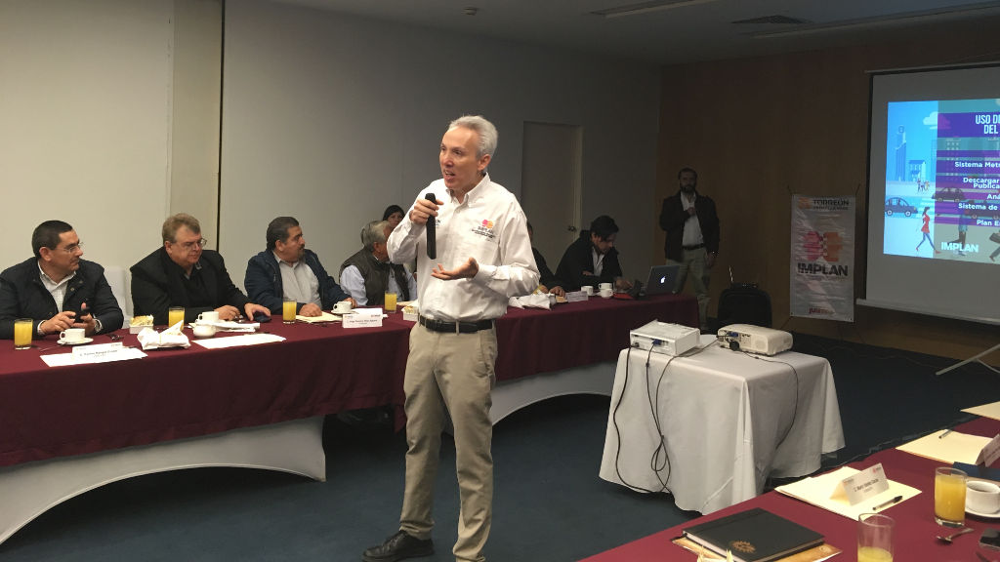
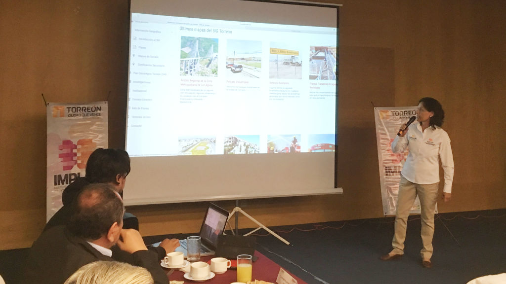

Esta mañana el Instituto Municipal de Planeación y Competitividad de Torreón (IMPLAN) llevó a cabo su primera sesión de Consejo Directivo de 2017, con el fin de presentar a los consejeros y asistentes cómo pueden utilizar la Plataforma del Conocimiento: www.trcimplan.gob.mx y dar a conocer sus últimas novedades.
La sesión fue presidida por el director Eduardo Holguín Zehfuss, quien hizo hincapié en la necesidad de que más ciudadanos conozcan las mil 419 publicaciones que contiene la plataforma que contiene indicadores de Torreón, Gómez Palacio y Lerdo, análisis, mapas, entre otros.
Se contó con la presencia de consejeros como Eugenio Treviño, de Canacintra; Alberto Allegre, de FOMEC; el ambientalista Francisco Valdéz Pérezgazga, el rector del Tecnológico de Monterrey, Martín López, así como diversos empresarios, integrantes de cámaras y colegios; y algunos regidores.

Guillermo Valdés, encargado de programación y software del IMPLAN, presentó una navegación por todo el sitio para que el público pueda hacer uso del mismo con facilidad.
Mostró el Sistema Metropolitano de Indicadores (SMI), el Sistema de Información Geográfica (SIG), el Plan Estratégico para Torreón (TRC 2040), así como los indicadores por categorías, por ejemplo: Seguridad Pública, Educación, Finanzas Públicas, Género, Macroeconomía, Grupos Vulnerables, Salud, Población, Movilidad, Vivienda, entre otros.

De igual forma la arquitecta Tere Benítez dio un recorrido por los principales mapas publicados en el sitio, como el de Parques Industriales, el del Relleno Sanitario, el de Plantas Tratadoras de Aguas Residuales, así como el de Áreas Verdes, por mencionar algunos.
Se informó que el mapa más visitado en la plataforma es el de las Rutas de Transporte. Asimismo, en el área de cartera de proyectos las páginas más visitadas son las de Entono Urbano y Movilidad y Transporte.
El sitio trcimplan.gob.mx recibe en promedio 250 visitadas diarias de lunes a viernes; en cuanto países, 86 por ciento de las visitas son de México, tres por ciento de Estados Unidos, 2.9 por ciento de Perú y 1.6 por ciento de España.
De las ciudades que más visita el sitio está en primer lugar Torreón con 45 por ciento, el resto de Monterrey, Ciudad de México, Gómez Palacio, entre otros.
El Sistema Metropolitano de Indicadores contiene 251 indicadores por Torreón, 222 por Gómez Palacio, 222 por Lerdo y 223 por Matamoros y también cuenta con 192 análisis publicados a la fecha en que se escribió este boletín de prensa.